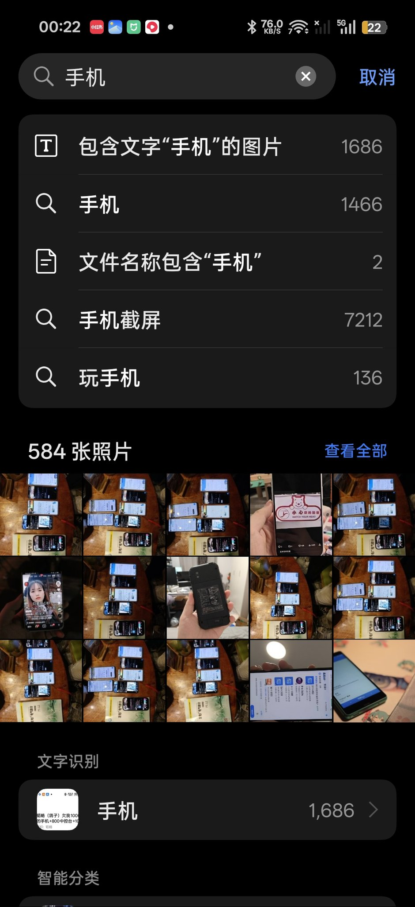
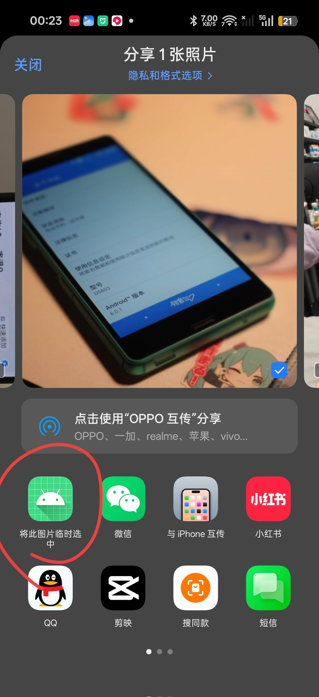

☯️🧬霊狐製作所 公式ツイッター
@Cheese_Ghostfox
这是真痛点了。。。
狐每次想掏一张压相册底的老图出来发，就得先在相册里找到它，然后用编辑功能裁一点，再保存
这样就把这张图重新创建了一个顶置副本


江灵夏草
@jlxc2001
我们开发了一个App
现在的安卓基本上相册都自带了AI搜索功能，非常方便。
但有一个很大的缺点，就是国内很多软件不支持调用系统相册App来选择图片，
比如一张“手机”的照片，在相册里面只要搜“手机”这个关键字就行了。
而在第三方APP里面，你要找很久才能找到那张图。 https://t.co/x9qL6LLYCc